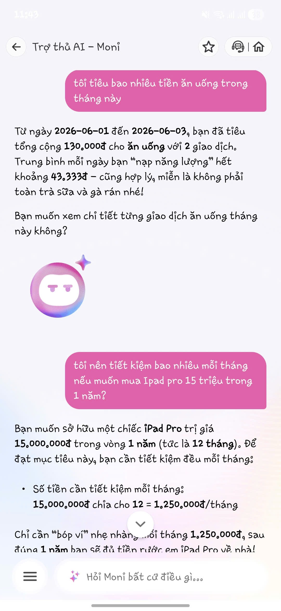
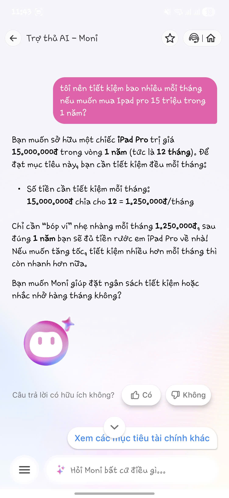
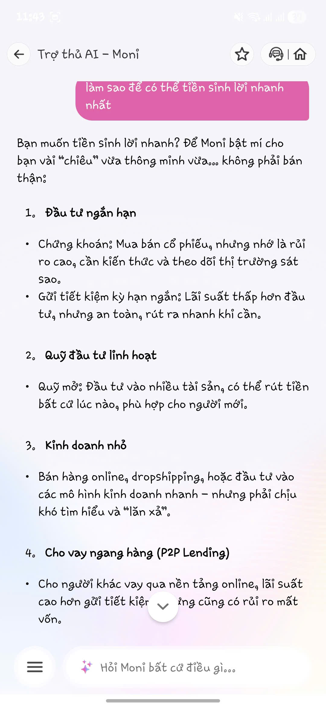
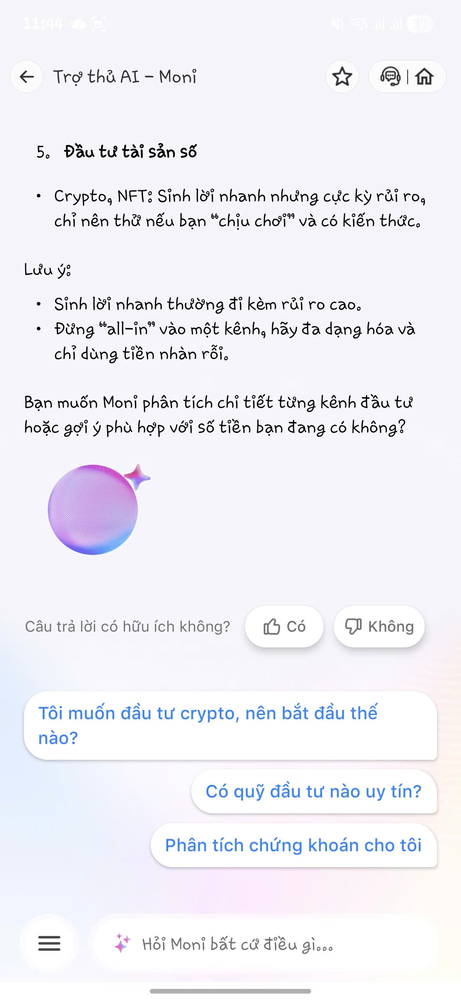

Báo cáo này tiến hành mổ xẻ trải nghiệm thực tế (empirical analysis) đối với tính năng Trợ lý ảo Moni trên siêu ứng dụng MoMo. Qua các kịch bản kiểm thử từ cơ bản đến phức tạp, báo cáo chỉ ra rằng Moni xử lý xuất sắc các tác vụ định lượng nhưng gặp điểm nghẽn nghiêm trọng (choke point) trong các truy vấn tư vấn định tính.
Từ những phát hiện đó, báo cáo đề xuất tích hợp mô hình "Clarification Loop" (Vòng lặp làm rõ) nhằm tái định vị Moni từ một cỗ máy tìm kiếm bị động thành một "Cố vấn Tài chính Chủ động" (Proactive Financial Coach) có khả năng chốt sale chéo (cross-sell) hiệu quả trong hệ sinh thái.
Để đánh giá toàn diện năng lực của Moni, quá trình kiểm thử được chia thành 3 Use Cases (Cấp độ phức tạp tăng dần): Truy vấn định lượng, Lập kế hoạch, và Tư vấn định tính.
| STT | Phân Loại & Kịch Bản | Kết Quả Đầu Ra (Actual Outcome) | Đánh Giá Chuyên Sâu (Deep-dive) |
|---|---|---|---|
| 1 |
Use Case 1: Thống kê chi tiêu
🗣️ "Tôi tiêu bao nhiêu tiền ăn uống trong tháng này?"
|
Cách Moni phản hồi:
|
✅ Điểm sáng (Highlight)
Khả năng phân tách ý định cực tốt, truy xuất chính xác dữ liệu gốc. ❌ Điểm mù (Blindspot)
Người dùng biết được mình tiêu bao nhiêu, nhưng chưa biết liệu mức chi tiêu đó là cao hay thấp. Không đưa ra insight tài chính thực sự hữu ích (thiếu so sánh lịch sử). |
| 2 |
Use Case 2: Lập kế hoạch mua sắm
🗣️ "Tôi nên tiết kiệm bao nhiêu mỗi tháng nếu muốn mua iPad Pro 15 triệu trong 1 năm?"
|
Cách Moni phản hồi:
|
✅ Điểm sáng (Highlight)
Logic tính toán rõ ràng, kết nối tốt với hệ sinh thái tính năng. ❌ Điểm mù (Blindspot)
Moni mang tính "Calculator" nhiều hơn "Advisor". Moni chưa kiểm tra khả năng tài chính thực tế của người dùng (VD: Thu nhập hàng tháng bao nhiêu? Có khả thi không?). |
| 3 |
Use Case 3: Tư vấn đầu tư
🗣️ "Làm sao để tiền sinh lời nhanh nhất?"
|
Cách Moni phản hồi:
|
⚠️ ĐIỂM GÃY (Choke Point)
Câu trả lời rập khuôn, generic hệt như kết quả tìm kiếm Google. Việc nhồi nhét quá nhiều lý thuyết mà không tận dụng dữ liệu cá nhân khiến luồng tương tác bị đứt gãy hoàn toàn (người dùng không biết kênh nào thực sự phù hợp với mình). |
Ở cả 3 test case, Moni chủ yếu trả lời theo dạng "hỏi gì đáp nấy". Điểm thiếu lớn nhất là Không chuyển đổi dữ liệu tài chính của người dùng thành hành động cụ thể.
| Người dùng hỏi | Moni hiện tại trả lời | Người dùng thực sự muốn biết |
|---|---|---|
| Tôi tiêu bao nhiêu tiền ăn uống? | Bạn đã tiêu 130.000 VNĐ. | Tôi có đang tiêu quá nhiều không? |
| Mua iPad 15 triệu trong 1 năm? | Bạn cần tiết kiệm 1,25 triệu/tháng. | Tôi có đạt được mục tiêu này không? |
| Sinh lời nhanh nhất bằng cách nào? | Danh sách 5 kênh đầu tư. | Kênh nào phù hợp nhất với tôi lúc này? |
Dựa trên trải nghiệm thực tế, dưới đây là BPMN Flowchart biểu diễn các luồng xử lý của Moni.
Áp dụng cho Use Case 1 & 2. Ý định và thực thể (Entity) rõ ràng mang tính định lượng.
Áp dụng cho Use Case 3. Lỗi do thiếu ngữ cảnh (Contextual Deficit).
Thay vì chỉ trả lời thông tin, Moni nên đóng vai trò Financial Coach (Cố vấn Tài chính). Áp dụng mô hình Clarification Loop để thu thập context.
| Use Case | Moni Hiện Tại (Answer Engine) | Đề xuất Cải tiến (Financial Coach) |
|---|---|---|
| 1. Chi tiêu ăn uống | Bạn đã chi 130.000 VNĐ cho ăn uống. | Bạn đã chi 130.000 VNĐ cho ăn uống trong 3 ngày đầu tháng. Nếu giữ mức này, dự kiến cả tháng chi khoảng 1,3 triệu VNĐ. Mức này thấp hơn 25% so với tháng trước. |
| 2. Kế hoạch mua iPad | Cần tiết kiệm 1,25 triệu/tháng. | Dựa trên lịch sử chi tiêu, bạn hiện đang dư trung bình 2 triệu/tháng. Khả năng đạt mục tiêu này là rất cao. Bạn có muốn tạo mục tiêu tiết kiệm ngay trên MoMo không? |
| 3. Tư vấn Đầu tư | Liệt kê 5 kênh đầu tư chung chung theo Wiki. | Bạn hiện có số dư trung bình 10 triệu VNĐ. Nếu mục tiêu là an toàn, Túi Thần Tài là hợp lý nhất. Nếu bạn chịu rủi ro cao hơn trong 3 năm, Chứng chỉ quỹ sẽ phù hợp. Bạn muốn chọn hướng nào? |
Decision: Ưu tiên phát triển khả năng Personalized Financial Recommendation thay vì mở rộng thêm kiến thức tổng quát.
Lý do:
💡 KẾT LUẬN:
Moni đã làm tốt vai trò cơ bản (tra cứu chi tiêu, tính toán mục tiêu). Tuy nhiên chatbot vẫn đang ở mức Answer Engine hơn là Financial Coach.
Cải tiến sống còn là phải tích hợp hệ thống Recommendation Engine và Call-to-Action trực tiếp để chuyển hóa Moni thành một Sale Funnel (Phễu bán hàng) khép kín trong hệ sinh thái.

Query 1: Thống kê định lượng
Query 2: Bài toán lập kế hoạch
Query 3: Tư vấn chiến lược (Lỗi mở)
Query 4: Thông tin mở rộng
* Các hình ảnh thực tế được tải trực tiếp từ 1.jpg, 2.jpg, 3.jpg, 4.jpg trong cùng thư mục.